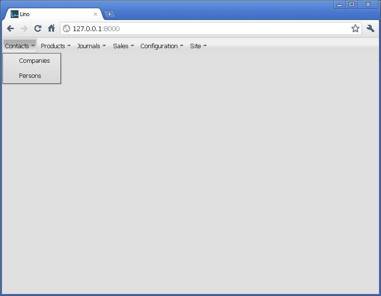
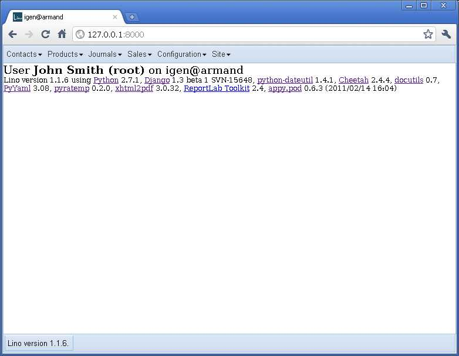

20110308¶
A Qooxdoo User Interface for Lino¶
The final goal is that you simply change
the value of your local
ROOT_URLCONF from
'lino.ui.extjs.urls'
(currently the only allowed value)
to 'lino.ui.qx.urls'.
Lino would do the rest for you.
But there is some work to do before we get there.
Step 1 : The Qooxdoo application “Lino”¶
I started to write a standalone Qooxdoo application called “Lino”. The code is here: /lino/ui/qx/app.
This application currently doesn’t do very much: it just issues an AJAX call to request the main menu, which it then uses to actually build and show the menu. The menu items are correctly shown, but they currently don’t do anything.
| Qooxdoo | ExtJS |
|  |  |
And that’s enough for the moment. Before going on, we must solve another problem: how to get our Qooxdoo application integrated into the Django server?
Step 2 : Running a Qooxdoo application on a Django server¶
Here is how I do it for the moment. Unfortunately I need to do a generate.py build each time I want to test a code change. See docs/tickets/30
On the development server I have in my urls.py:
if False and settings.DEBUG: # doesn't yet work. QXAPP_PATH = os.path.abspath(os.path.join(os.path.dirname(__file__),'app','source')) else: QXAPP_PATH = os.path.abspath(os.path.join(os.path.dirname(__file__),'app','build')) QX_PATH = "L:/snapshots/qooxdoo/qooxdoo", prefix = settings.MEDIA_URL[1:] assert prefix.endswith('/') urlpatterns += patterns('django.views.static', (r'^%sqxapp/(?P<path>.*)$' % prefix, 'serve', { 'document_root': QXAPP_PATH, })) urlpatterns += patterns('django.views.static', (r'^%sqx/(?P<path>.*)$' % prefix, 'serve', { 'document_root': QX_PATH, }))
On a production server, I’ll create symbolic links in the server’s media directory:
cd /usr/local/django/myproject/media ln -s /var/snapshots/lino/lino/ui/qx/app/build qxapp ln -s /var/snapshots/qooxdoo-1.3-sdk qx
Here is my index view:
def index_view(self, request,**kw): if False and settings.DEBUG: # doesn't yet work. QXAPP_ROOT = os.path.abspath(os.path.join(os.path.dirname(__file__),'app','source')) else: QXAPP_ROOT = os.path.abspath(os.path.join(os.path.dirname(__file__),'app','build')) fn = os.path.join(QXAPP_ROOT,"index.html") return HttpResponse(file(fn).read())
In file /lino/ui/qx/app/source/index.html, I manually replaced the line
<script type="text/javascript" src="script/lino.js"></script>
by
<script type="text/javascript" src="media/qx/script/lino.js"></script>

{kind=link}
{kind=link}